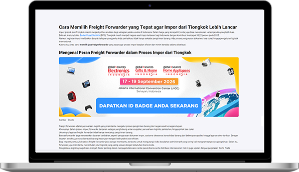

3. Jangan tergiur harga murah
Minta rincian biaya dari awal — freight cost, storage fee, sampai biaya customs. Forwarder yang transparan & responsif itu tanda mereka profesional.
Freight cost
Storage fee
Customs
Sourcing yang tepat dimulai dari mitra logistik yang tepat.
Baca selengkapnya di:

bit.ly/gsiartikel12